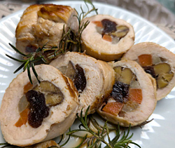

鶏肉の恵方巻グリル
- 調理時間： 60分
- （一人当たり）
- カロリー：784kcal
- たんぱく質：36.6g
- 脂質：53.9g
- 炭水化物：38.1g
- 塩分：2.2g


＜2人分＞
- 鶏肉
- 1枚(約400g)
- 塩、コショウ
- 適量
- サラダ油
- 適量
- ニンジン
- 1/4本
- ゴボウ
- 15センチ位
- 干し柿
- 1個
- 甘栗
- 5～６個位
- ローズマリー
- 1本
- タコ糸


- 鶏肉は余分な脂を取り除き、厚みのある部分に切り込みを入れ、均一な厚さになるようにする。
サラダ油を回しかけ、塩、コショウをしてよく揉み込む。 - ニンジンは縦４～５等分に切る。
ゴボウは縦２～４等分に切る。
耐熱容器にニンジンとゴボウを入れ、水をふりかけ、ラップをかけ、電子レンジ600ｗで1分加熱する - 干し柿は、巻きやすい大きさに切る。
甘栗は皮をむき、2等分に切る。 - ①の鶏肉を皮のない側を上にして、ニンジン、ゴボウ、干し柿、甘栗を手前から並べる。
すき間ができないようにきっちり巻くことが大事。 - タコ糸でぐるぐる巻き付け、巻き終わったら、ひとつ上の糸に通してむすんで固定する。
- 予熱した180℃のオーブンで鶏肉を焼く。
ローズマリーも一緒に焼くと香りがよい。
20～25分焼き、温度を上げ、皮がパリッとするまで焼き上げる。
しっかり火が通れば切り分けて完成。
鶏肉の恵方巻グリル
節分。２月３日頃。本来は、立春、立夏、立秋、立冬の前日はすべて節分にあたるのですが、現代では立春の前日だけが「節分」とされています。
今年の恵方は南南東。これが縁起のよい吉方となり、その方角を向いて恵方巻を食べると無病息災で過ごせるとか。本来の恵方巻は７種類の具を巻き込んだ巻きずしですが、昨今はいろんな料理で福を巻き込みます。福は内、きっと今年もいい年だ。